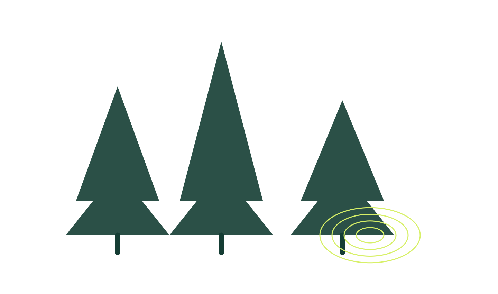
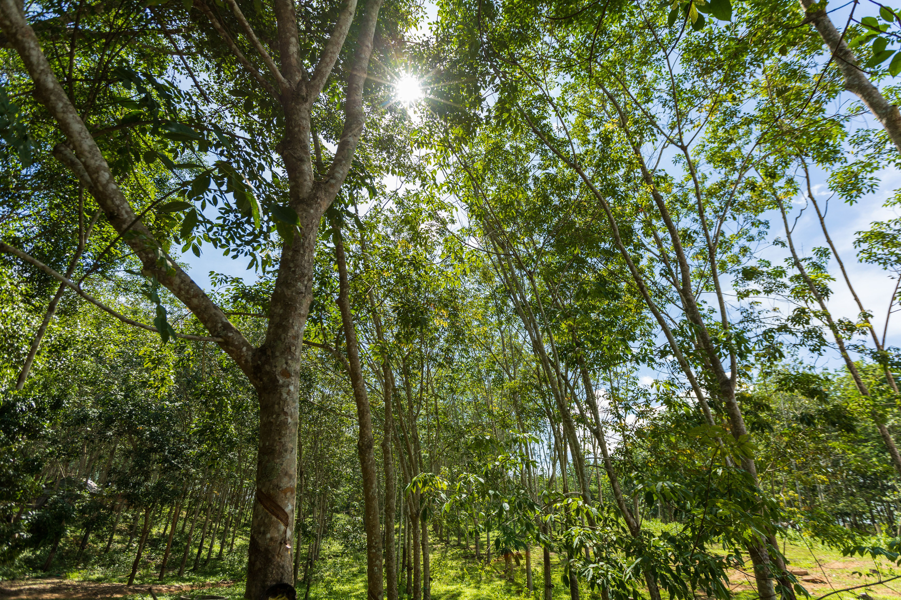
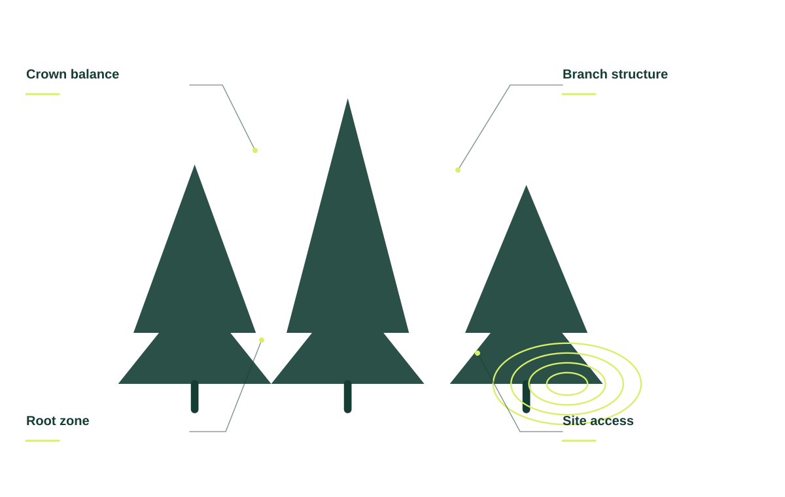
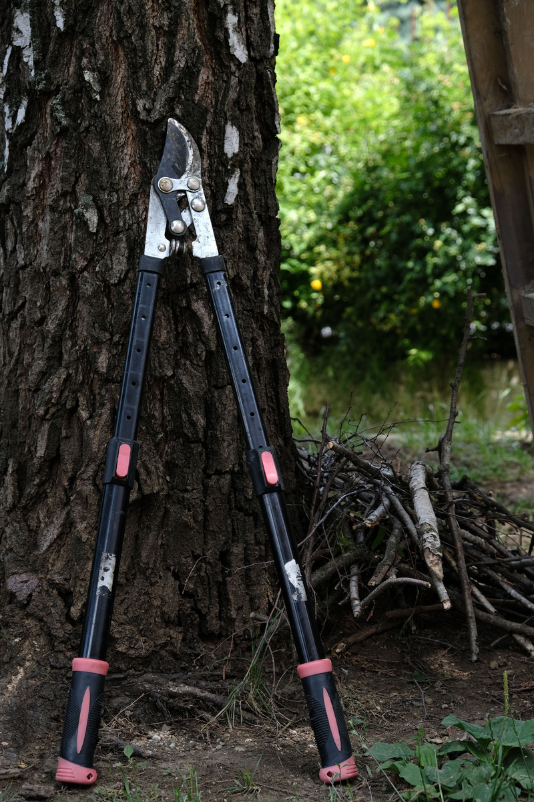
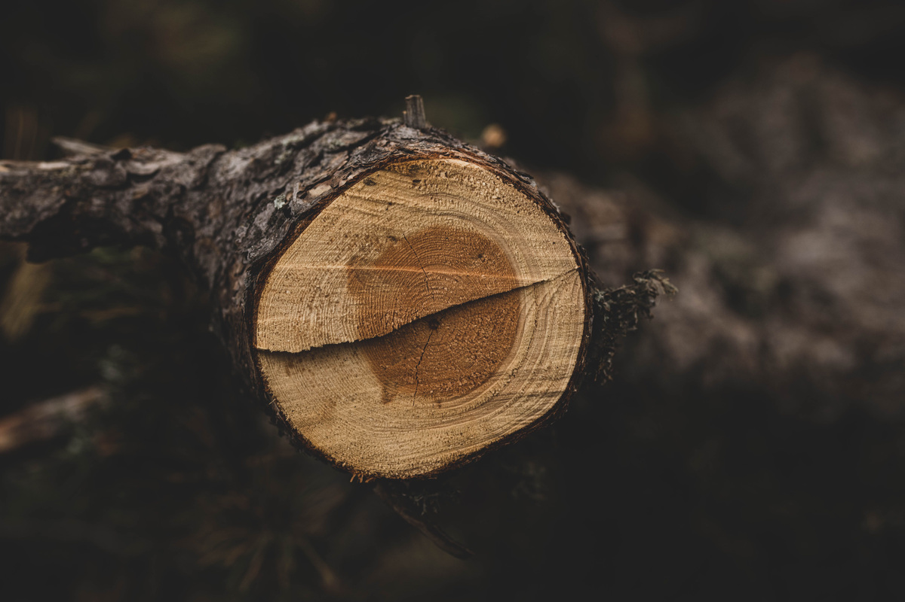

Pruning & shaping
Careful cuts guided by tree structure, growth, and your goals.

Thoughtful tree care for the landscape you live with. From a careful prune to a considered removal.
Talk about your trees ↗
Careful cuts guided by tree structure, growth, and your goals.
Discuss the access, condition, and practical needs of your property.
A clear plan for fallen limbs and the space around them.
Understand the next steps for trees that need a closer look.
Tree care decisions are connected to the whole property. A careful brief looks at the canopy, surrounding structures, garden below, and what you want to change.

JUNIPER TREE CO. / THE DETAILS MATTERDiscuss the parts of the tree that concern you and the shape or clearance you hope to achieve.
Buildings, paths, boundaries, and the garden all matter when planning work around a tree.
Share photos and your priorities so we can discuss an appropriate visit and a clear scope.
Shade, structure, the garden below, and the space around your home. We talk about the whole property before deciding what the tree needs next.
Tell us about your landscape ↗A place to sit in the shade. A clearer roofline. A garden with room to thrive.


Start with the property, your priorities, and the details you want us to understand.
Talk through suitable options, practical access, and the work you want included.
Review the proposed scope and ask questions before deciding on the next step.
When you get in touch, a little context goes a long way. These are the details that help us start a useful conversation about your tree care project.
Tell us what you have in mind ↗Tell us about the tree and its setting so the conversation starts with your situation.
A few details about what has changed help us understand what you need.
Share nearby structures when you get in touch, including photos where useful.
Let us know about access and cleanup so the proposed scope reflects your priorities.
Tell us about the tree, nearby structures, and access. We can discuss the property and what a suitable visit should cover.
Share photos of the area and the size of the branches so we can discuss access and the cleanup scope.
Yes. Start with what concerns you or what you want to change. We can discuss the options worth considering.
Thoughtful tree care for the landscape you live with. From a careful prune to a considered removal.